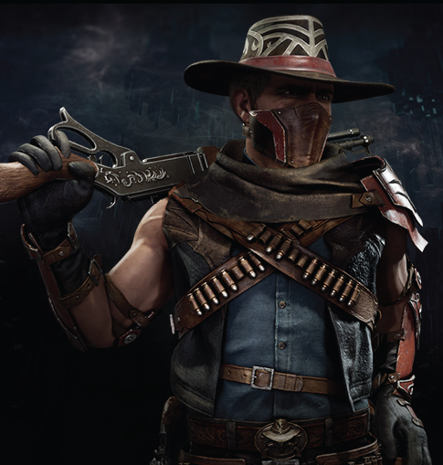

|  | BIOGRAFIA |
|---|---|
|
Erron Black é um pistoleiro e caçador de recompensas do universo de Mortal Kombat.
Originalmente um humano da Terra, ele fez um acordo com Shang Tsung há mais de 100 anos,
ganhando longevidade sobrenatural.
Erron é frio, profissional e sempre trabalha para quem paga mais, seja o Império de Outworld,
Kotal Kahn ou qualquer outro líder forte.
Mesmo sem poderes mágicos, ele é letal,
preciso e um dos melhores atiradores de todos os reinos. | |
| ARMAS | |
|
Pistolas de Ação Rápida: Suas armas mais icônicas. Representam precisão e velocidade mortal. Rifle de Longo Alcance: Usado para abates à distância. Mostra sua habilidade como franco-atirador. Pó de Areia: Bombas e truques baseados em poeira e areia. Usadas para cegar, prender ou surpreender o oponente. | |
| Habilidades | |
|
Atirador Perfeito: Mira precisa, reflexos rápidos e tiros mortais. Agilidade e Acrobacia: Movimentos rápidos, saltos e esquivas eficientes. Experiência de Séculos: Conhece táticas, combate e armas como poucos, graças à sua longevidade. |